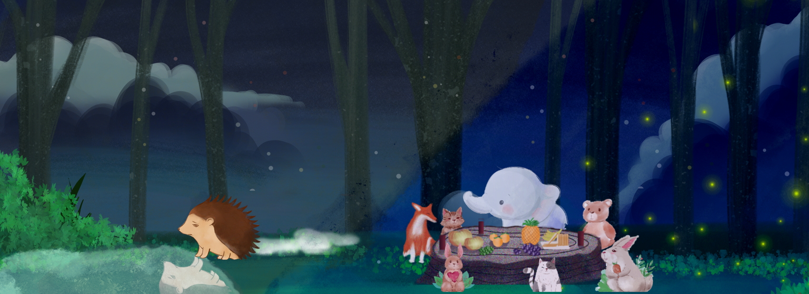

Hedge Hug (Ongoing)
"Hedge Hug" is a 2D single-player narrative-driven roleplaying game made in Unity. It explores low self-esteem and social anxiety issues with interactive narrative puzzles and emotional gameplay moments, through the lens of a caring and sensitive hedgehog, Emma, a ceramic artist who struggles with loving and trusting herself in her daily life.
As an engineer in this ongoing Master's Thesis Project in a team of eleven, I have been optimizing game tools and systems, developing game features and puzzles.

I joined this ongoing year-long project in October 2021. The game is
currently in pre-alpha.
In this project, I have worked on the game's dialogue system which directly
imports google spreadsheets into the game's dialogues, debugged and implemented
the game's tween animation scripts on objects and texts, and implemented
prototypes for different game puzzles.
It has been my first time joining a project midway in the process. While greatly
expanding my knowledge on game progamming and development, I have gained new and
invaluable experience from debugging and improving existing scripts.
As a member of this team, it has been a pleasure working with the game director,
fellow engineers, professors, and others.
Features
The Key features of Hedge Hug are WIP...
Below is a video of early prototype of the game.